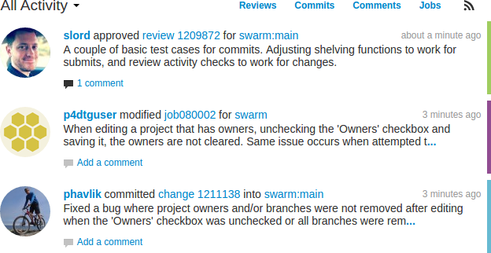
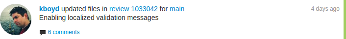

Activity streams
An activity stream displays a list of events that have occurred recently in the associated Helix Versioning Engine, whenever changelists are checked in, jobs are created, code reviews are updated, comments posted, etc.

 Activity streams are presented for global server activity, as well as for
events occurring for projects and users. Logged-in users can click the
drop-down menu to choose between viewing all
activity or just the activity of the projects and users that they are
following.
Activity streams are presented for global server activity, as well as for
events occurring for projects and users. Logged-in users can click the
drop-down menu to choose between viewing all
activity or just the activity of the projects and users that they are
following.
Activity streams can be filtered to only display events related to reviews, changes, comments, or jobs. Click a filter label to enable that filter. Click the label again to disable the filter, or click a different filter to change filters.
When active, each filter label displays a distinct background color that matches the color stripe on the right side of each event in the activity stream, to help quickly identify each event's type.
Anyone can subscribe to an RSS (Really Simply Syndication) feed for a particular activity stream so that events can be monitored in your favorite feed reader.
Events within an activity stream contain links to their respective resources. Click the links to visit users, changelists, projects, comments, and more.

Each activity stream starts with as many as 50 events. As you scroll down the page, Swarm fetches additional events in batches of 50 until the stream is exhausted. For a long-running server, or a server with significant activity, it could take quite a while to receive all of the events.